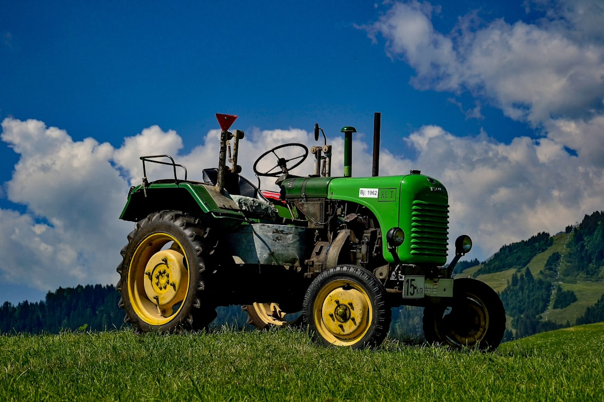

Топ-10 минитракторов: рейтинг лучших моделей для дачи и фермерства

Выбор минитрактора - это серьезное вложение, которое должно окупаться производительностью и надежностью. Часто покупатели ориентируются на мощность в лошадиных силах или яркий дизайн, упуская из виду ключевые параметры, от которых зависит реальная эффективность техники. Как эксперт с многолетним опытом, я, Александр, подготовил этот рейтинг не по названиям брендов, а по функциональным классам и типам машин. Такой подход поможет вам выбрать не просто красивую технику, а настоящего партнера для работы на земле.
Методология этого топа основана на анализе сотен реальных сценариев использования минитракторов в частных и фермерских хозяйствах. Мы не будем сравнивать конкретные модели X и Y, а сфокусируемся на оптимальных конфигурациях для конкретных задач: от ухода за газоном на 6 сотках до вспашки нескольких гектаров целины. Рейтинг построен по принципу «от самого универсального к более специализированному», где каждая позиция представляет собой выверенный набор характеристик, доказавший свою эффективность на практике. Мы оценим каждую категорию по совокупности качеств, чтобы вы могли найти идеальный минитрактор под свой бюджет и задачи.
Скачать рейтинг в PDF Обсудить с экспертомКритерии оценки
- Мощность и тип двигателя - Ключевой параметр, определяющий тяговые возможности. Мы оцениваем не только пиковую мощность, но и тип двигателя (дизель предпочтительнее за тягу на низких оборотах) и его соответствие массе трактора.
- Трансмиссия и тип привода - Механика или гидростат, задний или полный привод. Выбор напрямую влияет на удобство работы, проходимость и стоимость. Для полевых работ важна механика с пониженными передачами, для коммунальных - маневренный гидростат.
- Масса и конструкция рамы - Вес трактора - это его способность реализовывать мощность двигателя в реальную тягу. Легкая машина будет буксовать там, где тяжелая уверенно тянет плуг. Мы оцениваем сбалансированность массы и прочность рамы.
- Гидравлическая система и ВОМ - Возможности трактора напрямую зависят от его гидравлики (количество выходов, производительность насоса) и вала отбора мощности (ВОМ). От них зависит, какое навесное оборудование можно использовать.
- Универсальность и совместимость с навеской - Насколько легко трактор адаптируется к разным задачам: от кошения травы до уборки снега. Оценивается наличие стандартной трехточечной сцепки, разнообразие доступной навески и простота ее подключения.
- Стоимость владения и доступность сервиса - Мы учитываем не только цену покупки, но и расходы на обслуживание, доступность запчастей и расходных материалов. Простая и ремонтопригодная конструкция ценится выше сложных, но редких узлов.
Топ-10
1. Универсальный минитрактор 24-36 л.с. с полным приводом и реверсом
Эта конфигурация заслуженно занимает первое место, так как закрывает около 80% всех задач в частном хозяйстве и небольшом коммунальном секторе. Мощности 24-36 л.с. достаточно для работы с почвофрезой, двухкорпусным плугом, роторной косилкой и прицепом. Полный привод обеспечивает уверенную проходимость на сложных грунтах, склонах и при уборке снега, а наличие реверса кардинально ускоряет маневрирование с фронтальным отвалом или щеткой. Это настоящий швейцарский нож в мире мини-техники, оптимальный баланс между размером, мощностью и функциональностью.
- Мощность: 24-36 л.с., дизельный двигатель.
- Привод: Полный (4WD), подключаемый.
- Трансмиссия: Механическая с реверсом и понижающим рядом.
- Гидравлика: Минимум 2 гидровыхода, трехточечная сцепка кат. 1.
- Особенности: Идеальный баланс для круглогодичного использования, совместимость с широким спектром навесное оборудование.
Плюсы: Высокая универсальность, отличная проходимость, высокая производительность, большая ликвидность на вторичном рынке.
Минусы: Более высокая стоимость по сравнению с заднеприводными аналогами, требует больше места для маневров, чем самые компактные модели.
2. Бюджетный заднеприводный минитрактор 15-24 л.с.
Отличный выбор для дачи, приусадебного хозяйства на ровном участке и для задач, не требующих экстремальной тяги. Модели этого класса идеально подходят для кошения травы, перевозки грузов на прицепе, работы с легкой фрезой и окучником. Простая конструкция с механической коробкой передач и задним приводом делает их доступными по цене, надежными и легкими в обслуживании. Это рабочая лошадка для тех, кто перерос мотоблок и хочет большего комфорта и производительности без серьезных затрат.
- Мощность: 15-24 л.с., дизельный двигатель.
- Привод: Задний (2WD).
- Трансмиссия: Механическая, часто с понижающим рядом.
- Гидравлика: Один гидровыход, трехточечная сцепка кат. 0 или 1.
- Особенности: Низкая стоимость, простота конструкции, экономичность.
Плюсы: Доступная цена, низкие эксплуатационные расходы, хорошая маневренность на твердых покрытиях, не повреждает газон.
Минусы: Ограниченная проходимость на влажной почве, склонах и при уборке снега, не подходит для тяжелых почвообрабатывающих работ.
3. Фермерский минитрактор 30-40 л.с. с усиленной гидравликой
Когда задачи выходят за рамки дачного участка и начинаются серьезные аграрные работы, на сцену выходит этот класс техники. Мощный дизель в паре с полным приводом и достаточной массой позволяет уверенно работать с 2-3 корпусным плугом, тяжелой почвофрезой шириной до 1.4 метра и другим профессиональным навесным оборудованием. Усиленная рама, мосты и наличие нескольких гидровыходов - обязательные атрибуты таких машин. Это уже не просто помощник, а основной инструмент для небольшого фермерского хозяйства.
- Мощность: 30-40 л.с., 3-х или 4-х цилиндровый дизель.
- Привод: Полный (4WD).
- Трансмиссия: Механическая с большим количеством пониженных передач.
- Гидравлика: 2-4 гидровыхода, производительный насос, усиленная трехточечная навеска.
- Особенности: Высокая тяга, возможность работы с тяжелой навеской, часто оснащается кабиной.
Плюсы: Высокая производительность на полевых работах, надежность конструкции, большой запас прочности.
Минусы: Высокая стоимость, большие габариты и вес, избыточен для малых участков.
4. Компактный полноприводный минитрактор 15-24 л.с.
Этот тип сочетает маневренность и компактные размеры дачных моделей с проходимостью серьезной техники. Идеальный вариант для участков со сложным рельефом, склонами, а также для регионов с затяжным межсезоньем и снежными зимами. Полный привод здесь не роскошь, а необходимость, которая позволяет эффективно работать с отвалом для снега, буксировать прицеп по раскисшей грунтовке и обрабатывать почву там, где заднеприводный аналог давно бы застрял.
- Мощность: 15-24 л.с., дизельный двигатель.
- Привод: Полный (4WD).
- Трансмиссия: Механическая.
- Гидравлика: 1-2 гидровыхода, стандартная трехточка.
- Особенности: Компактность в сочетании с высокой проходимостью.
Плюсы: Отличная проходимость для своих габаритов, универсальность применения (от газона до уборки снега), хорошая маневренность.
Минусы: Дороже заднеприводных моделей, несколько выше расход топлива.
5. Минитрактор для коммунальных работ и уборки снега (с кабиной)
Круглогодичная эксплуатация, особенно в коммунальной сфере, предъявляет особые требования. Наличие отапливаемой кабины превращает работу в метель или дождь из испытания в рутину. Такие машины обычно имеют мощность от 24 л.с., полный привод и часто оснащаются гидростатической трансмиссией для максимального удобства при частых сменах направления движения. Хорошая оптика, стеклоочистители и система обдува стекол - обязательные атрибуты этого класса.
- Мощность: 25-40 л.с.
- Привод: Полный (4WD).
- Трансмиссия: Гидростатическая (ГСТ) или механическая с реверсом.
- Кабина: Жесткая, отапливаемая.
- Особенности: Создан для круглогодичной работы, высокая степень комфорта и безопасности оператора.
Плюсы: Возможность работать в любую погоду, высокий комфорт, повышенная производительность за счет отсутствия простоев по погодным условиям.
Минусы: Значительно более высокая цена, увеличенная масса и габариты, кабина может мешать при работе в саду под деревьями.
6. Маневренный минитрактор с гидростатической трансмиссией (ГСТ)
Для задач, требующих постоянных маневров, частых остановок и смены направления движения (работа с фронтальным погрузчиком, уборка территории щеткой, уход за большими газонами), гидростатическая трансмиссия - лучшее решение. Управление скоростью и направлением осуществляется двумя педалями (вперед/назад), что освобождает руки и значительно снижает утомляемость оператора. Такие тракторы особенно ценятся в ландшафтном дизайне и коммунальных службах.
- Мощность: 18-35 л.с.
- Привод: 2WD или 4WD.
- Трансмиссия: Гидростатическая (ГСТ).
- Особенности: Максимальная простота управления, плавное изменение скорости.
- Назначение: Работа с погрузчиком, щеткой, косилкой, маневрирование в ограниченном пространстве.
Плюсы: Непревзойденное удобство управления, высокая маневренность, повышение производительности на "челночных" операциях.
Минусы: Более высокая стоимость и сложность в ремонте по сравнению с механикой, небольшие потери мощности на трансмиссии.
7. Мощный фермерский минитрактор 40-50 л.с. для тяжелых работ
Вершина класса минитракторов, на границе с полноценными тракторами. Эти машины предназначены для обработки значительных площадей (от 5-10 га), работы с тяжелым многокорпусным плугом, дисковой бороной, пресс-подборщиком и другим ресурсоемким оборудованием. Здесь все подчинено производительности: мощный многоцилиндровый дизель, солидная масса для максимальной тяги, усиленная конструкция и развитая гидравлическая система.
- Мощность: 40-50 л.с.
- Привод: Полный (4WD), неотключаемый.
- Масса: Увеличенная, часто с возможностью установки балластных грузов.
- Гидравлика: Высокопроизводительная, несколько пар гидровыходов.
- Особенности: Максимальная производительность в классе, часто оснащаются полноценной кабиной с кондиционером.
Плюсы: Способность выполнять самые тяжелые работы, высокая надежность узлов, работа с профессиональным сельхозоборудованием.
Минусы: Очень высокая цена, большие габариты, не подходит для мелких и дачных работ.
8. Базовый минитрактор с одноцилиндровым дизелем (до 18 л.с.)
Самый доступный и простой вход в мир мини-техники. Такие тракторы часто имеют ременной привод, простую конструкцию и одноцилиндровый дизельный двигатель. Они отлично подходят для самых базовых задач на небольшом участке: работа с легким плугом, окучником, картофелекопалкой и небольшим прицепом. Это хороший вариант для тех, кто хочет механизировать ручной труд с минимальным бюджетом.
- Мощность: 15-18 л.с., одноцилиндровый дизель.
- Привод: Задний (2WD).
- Трансмиссия: Механическая.
- Конструкция: Часто с ременной передачей, максимально упрощенная.
- Особенности: Минимальная цена, предельная простота в обслуживании.
Плюсы: Самая низкая стоимость на рынке новых минитракторов, дешевые запчасти и расходники, экономичность.
Минусы: Низкая мощность и тяга, ограниченный выбор навесного оборудования, невысокий комфорт, повышенная вибрация.
9. Минитрактор для ухода за газоном с широкими шинами
Для профессионального ухода за большими газонами, спортивными полями и парковыми зонами нужен специализированный инструмент. Главная особенность таких машин - широкие газонные шины с низким давлением, которые минимизируют повреждение дерна. Они часто оснащаются гидростатической трансмиссией для плавности хода и маневренности, а также среднемоторной или фронтальной декой для кошения травы. Масса трактора здесь играет против вас, поэтому предпочтительны легкие, но устойчивые модели.
- Мощность: 15-25 л.с.
- Привод: Задний (2WD) или полный (4WD) для склонов.
- Шины: Специализированные газонные, широкого профиля.
- Трансмиссия: Преимущественно гидростатическая.
- Особенности: Минимальное давление на грунт, высокая маневренность.
Плюсы: Не повреждает газон, высокая производительность кошения, отличная маневренность вокруг препятствий.
Минусы: Узкая специализация, плохо подходит для почвообработки из-за типа шин, высокая стоимость специализированных моделей.
10. Минитрактор с реверсивной коробкой для работы с погрузчиком
Хотя мы уже упоминали реверс в универсальной модели №1, стоит выделить эту конфигурацию отдельно. Наличие отдельного рычага реверса, который позволяет менять направление движения без переключения передач, - это ключевой фактор производительности при работе с фронтальным погрузчиком (КУН) или отвалом. Это позволяет оператору выполнять "челночные" операции (погрузка-разгрузка, перемещение сыпучих материалов) в разы быстрее, чем на тракторе со стандартной коробкой.
- Мощность:
24-40 л.с.
- Привод: Полный (4WD).
- Трансмиссия: Механическая с функцией реверса.
- Особенности: Наличие рычага реверса, усиленная рама для установки КУН.
- Назначение: Интенсивные погрузочно-разгрузочные работы, коммунальные задачи.
Плюсы: Значительное ускорение рабочих циклов, снижение утомляемости оператора, высокая эффективность при работе с отвалом и погрузчиком.
Минусы: Увеличение стоимости по сравнению с аналогами без реверса, усложнение конструкции трансмиссии.
Как выбрать из топа?
Выбор конкретной модели из представленного рейтинга зависит от ваших уникальных задач, площади участка и бюджета. Чтобы не ошибиться и купить минитрактор, который будет служить верой и правдой, а не стоять в гараже, следуйте этим практическим советам.
- Начните с трех главных задач. Не пытайтесь найти идеальный трактор для всего на свете. Определите 3 самые частые, трудоемкие и важные работы, которые вы планируете выполнять. Например: пахота огорода, кошение травы на большом участке и уборка снега зимой. Под эти задачи и подбирайте технику. Если в приоритете полевые работы, смотрите в сторону моделей №3 и №7. Если 90% времени - это маневрирование во дворе с щеткой или погрузчиком, ваш выбор - №6 или №10.
- Трезво оцените свой участок и бюджет. Площадь, рельеф (ровный, со склонами) и тип почвы (песок, суглинок, чернозем) напрямую диктуют требования к мощности и типу привода. Для ровного участка до 1-2 гектар без тяжелой пахоты может хватить модели №4 (15-24 л.с. с 2WD). Но если у вас есть уклоны, вязкая глина или вы планируете работать зимой, без полного привода (4WD), как у модели №3, не обойтись. Бюджет тоже критичен: если он строго ограничен, присмотритесь к базовой модели №8, но будьте готовы к компромиссам по комфорту и функционалу.
- Подумайте о будущем навесном оборудовании. Трактор - это лишь силовая установка на колесах. Его настоящая ценность раскрывается через навесное оборудование. Перед покупкой убедитесь, что у выбранной модели стандартная трехточечная сцепка (категории 0 или 1), подходящий по оборотам и типу ВОМ, а также достаточное количество гидровыходов для тех агрегатов, что вы планируете использовать. Если в планах активная работа с гидравликой (погрузчик, гидравлическая щетка, дровокол), модель №5 с двумя парами гидровыходов будет гораздо предпочтительнее базовых версий.
- Не экономьте на массе, приводе и гидравлике. Это три фундаментальных параметра, которые невозможно "докупить" или улучшить позже. Легкий трактор будет беспомощно буксовать с плугом, а заднеприводный застрянет в первом же весеннем сугробе или на мокром лугу. Лучше сэкономить на комфорте (взять модель №2 без кабины) или выбрать простую механику вместо дорогого гидростата (модель №6), но обеспечить себе достаточный запас по тяге, проходимости и возможностям гидравлики. Масса, полный привод и развитая гидросистема - это ваша производительность, безопасность и универсальность на годы вперед.
Как выбрать из топа?
Если нужен следующий шаг, подготовьте вводные по задаче, срокам и ограничениям - документ можно адаптировать под конкретный проект.